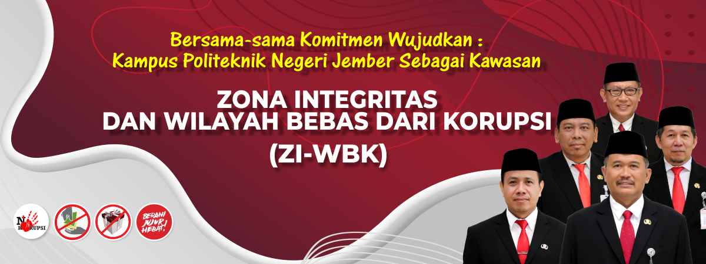

Sejarah
Politeknik Negeri Jember awal berdirinya dimulai adanya program pemerintah untuk mengembangkan pendidikan politeknik di
Indonesia pada tahun 1980. Ide munculnya pendidikan Politeknik Pertanian berasal dari pemikiran konsorsium ilmu-ilmu
pertanian pada tahun 1983, dan ditindaklanjuti dengan pembukaan Politeknik Pertanian di 6 kota yaitu: (1) Jember (2) Lampung
(3) Payakumbuh (4) Samarinda (5) Ujung Pandang (6) Kupang. Konsep pembangunan Politeknik Pertanian dilaksanakan secara
embrional dan struktural dititipkan kepada Universitas Negeri setempat yaitu: Universitas Jember, Universitas Lampung,
Universitas Andalas, Universitas Mulawarman, Universitas Hasanudin dan Universitas Nusa Cendana. Selanjutnya untuk memantapkan
realisasi rencana pendidikan Politeknik Pertanian di kota Jember, Konsultan dari Asian Development Bank (ADB) Dr. Robert
Maxwell dan Ir. Arifin dari Departemen Pendidikan dan Kebudayaan dan didampingi oleh Tim dari Universitas Jember yang
dipimpin oleh Ir. Soehardjo Widodo, MS melakukan studi kelayakan secara mendalam di wilayah Kabupaten Jember.
Proses pembangunan sarana dan prasarana Politeknik Negeri Jember dimulai pada tahun anggaran 1986/1987. Persiapan sumber daya
manusia ditetapkan oleh Dirjen Dikti melalui keputusan nomor: 43/DIKTI/KEP/1987 tanggal 1 September 1987 yang mengangkat
pengelola, Ir. Soetrisno Widjaja sebagai Direktur serta dibantu masing-masing oleh Ir. Setiadji sebagai Pembantu Direktur
bidang Akademik dan Drs. Achmad Sugianto Pembantu Direktur bidang Administrasi dan Keuangan. Agar dalam pengelolaannya dapat
mendapatkan hasil maksimal, maka tahun 1987 konsultan akademik dari BERT ENAREC mengirim seluruh pengelola guna studi banding
ke Lincoln College dan Chrischuh Polytechnic di New Zealand selama 6 bulan. Setelah melalui berbagai tahapan dan proses
persiapan sarana penyelenggaraan pendidikan seperti: lahan, gedung, peralatan, dosen dan tenaga penunjang lain, Dirjend Dikti
melalui keputusannya nomor 219/D/T/1988 tanggal 29 Oktober 1988 membuka Politeknik Pertanian Universitas Jember dengan 3
jurusan dan 5 program studi yang terdiri dari:
(1) Jurusan Budidaya Tanaman Pangan dengan Program Studi Budidaya Tanaman Pangan; (2) Jurusan Budidaya Tanaman Perkebunan
dengan Program Studi Budidaya Tanaman Perkebunan; (3) Jurusan Teknologi Pertanian dengan Program Studi Teknologi Pangan dan
Gizi, Mekanisasi dan Bangunan Pertanian, Tata Air Pertanian
Dalam perjalanannya, Politeknik Negeri Jember telah berkembang dan saat ini memiliki 9 Jurusan, 36 Program Studi dan 3 Kampus
diluar domisili.